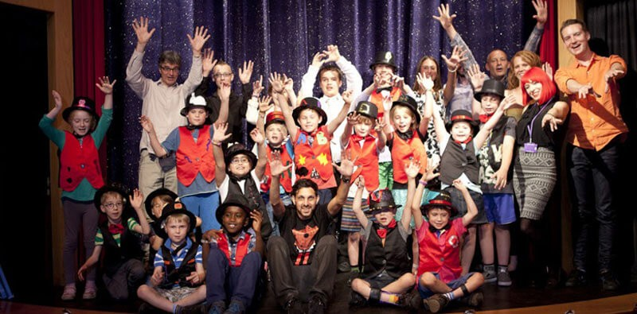

Magical therapy leads to new tricks for children with partial paralysis
An award-winning annual programme using 'magical therapy' to transform the lives of children with hemiplegia – paralysis predominantly of one side of the body – culminated with a magic show on Friday night, with the support of leading British magician, Dynamo.
Based on rigorous scientific research and clinical trials, Breathe Arts Health Research has created an innovative two-week 'magic camp' lead by Magic Circle magicians who work alongside occupational therapists and physiotherapists to teach specially selected and scaled magic tricks as well as theatrical skills in order to improve the motor skills and psychosocial wellbeing of young people with hemiplegia.
This year's camp ran from 28 July – 8 August, culminating in a magic show in the prestigious Magic Circle theatre, London, where the children performed alongside professional magicians. Leading British magician Dynamo, a keen supporter of Breathe, helped the young magicians before their final performance: "I love the work that Breathe are doing to help build confidence and co-ordination in children with partial paralysis. I can’t think of a better way to use magic than to improve the quality of young people’s lives!"
The scheme is recognised by and receives multi-year funding from NHS Lambeth and recently both NHS Wandsworth and NHS West Kent have also backed the scheme.
Jeremy Hunt, MP for South West Surrey and Secretary of State for Health said: "I was incredibly impressed by the miracles worked by this small social enterprise. They tap into the curiosity every child feels about magic to create extraordinary results for disabled children in terms of manual and physical dexterity."
Yvonne Farquharson, Managing Director, Breathe Arts Health Research said: "Over the two week period children progress significantly in using their weaker hand to perform two-handed tasks independently. In practical terms this means that, for the first time, children are able to use both hands to dress themselves, cut up food or tie shoe laces. Improvements in independence corresponds in a reduction in the additional time parents were providing support to their children by up to 50% The acquisition of these practical skills as well as having a special talent to 'wow' their friends, in turn delivers significant benefits to the children’s emotional wellbeing."
Leading Specialist Occupational Therapists, Dr Dido Green and Amarlie Moore, conduct clinical tests to examine hand function and self esteem of the children before and after the camp. They also use neuro imaging and transcranial magnetic stimulation to evaluate changes in the brain pre and post the therapy. After the intensive two-week programme, progress is reinforced by a course of monthly magic clubs, over six months, these are designed to consolidate the new skills acquired and help to ensure the lasting impact of the physical and emotional gains made.
David Owen QC is one of the founding Board of Directors at Breathe and a magic trainer on the programme, he was voted Young Magician of the year by the Magic Circle in the mid-1970s. In his ‘other’ life David is also a leading commercial arbitrator, mediator and barrister.
Breathe Camp 'graduates' are invited back to the summer camps to act as mentors for children attending for the first time. George, 15, who attended the camp in its first year in 2010 and is now a mentor to other children, is quick to identify the practical benefits: "My shoelaces used to take me about 5 minutes, but now I can do them in around 40 seconds."
According to one parent: "The great thing about the magic camp and performing the tricks that he learnt there, is that he is doing therapy and enjoying it."
This short film provides an overview of the programme: http://breatheahr.org/breathe-magic-hemiplegia.
Breathe Magic has recently been applying its magical approach to therapy to other areas, such as adult stroke sufferers and adolescents with mental illness. www.breatheahr.org.